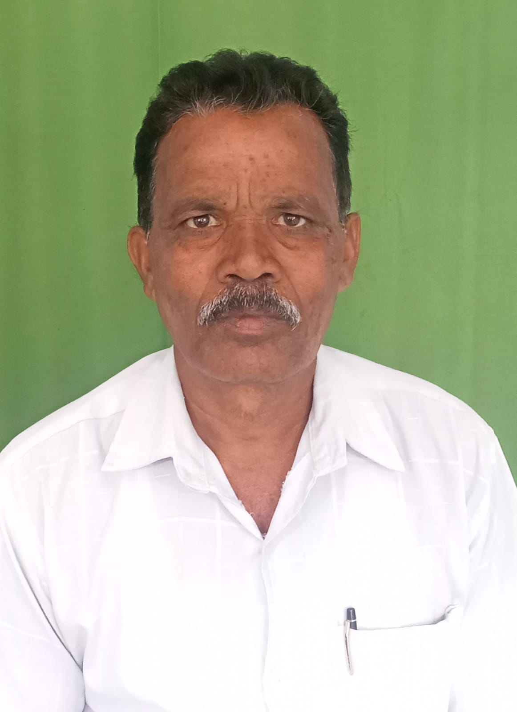

MarsuNeo is a DPIIT (Startup India) Recognised (DIPP: DIPP195578) MedTech startup registered under the Ministry Of Corporate Affairs (India) as Jalandar Kartika Computational Pvt. Ltd. (CIN: U58201OD2024PTC045104 | GST: 21AAGCJ3400Q1ZO).
We are a visionary medtech startup integrating precision sensors, digital signal processing, and in-house developed deep learning architectures to deliver scalable and affordable diagnostic solutions across a broad spectrum of clinical applications.
The Problem We Are Solving
Neonatal jaundice is a critical and common condition, especially among preterm infants. If left untreated, it can lead to life-threatening complications like kernicterus and sepsis. In low-income regions like rural India and Africa, access to diagnostic and therapeutic resources is limited, primarily due to high costs. There is an urgent need for an innovative, accessible solution to enable early and effective jaundice management.
Our Solution
We are developing the MarsuNeo Bilirubinometer – an innovative, non-invasive device currently under research and development. It extracts optical signatures of multi-wavelength light absorbed and scattered through an infant’s transcutaneous zone. Using proprietary artificial neural network models, the device provides a highly accurate estimate of bilirubin levels and distinguishes between direct and indirect bilirubin – surpassing current market solutions.
Our Team
Kailash Ch. Bhakta
Founder & CEO Biomedical Engineer, IIT BHU DeepTech Entrepreneur

Bhaskar Bhakta
Co-Founder Veteran Educator 38+ Years in Odisha Education Department
Manas Bossy
COO Sales & Marketing Specialist Passionate about Social Impact
Pravakar Bhakta
Creative Head Artist from Odisha Expert in Cultural Product Design